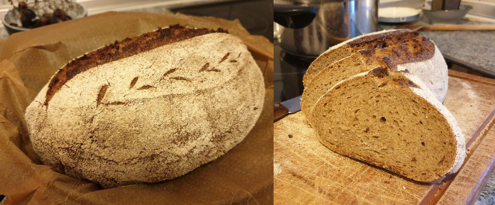

Aufgrund des Weizenanteils in diesem Brot ist die Teigführung wesentlich einfacher als bei einem reinen Roggenvollkornbrot. Die Kruste ist nach dem Backen knusprig. Die Krume ist etwas luftig und mild im Geschmack. TA 176. Ergibt ca. 630g Brot.

Zutaten (Menge ×1)
Gib die gewünschte Menge an:
Sauerteig
Sauerteig-Starter
Roggenvollkornmehl
Wasser (28°C)
Hauptteig
Sauerteig
Roggenvollkornmehl
Dinkelmehl Type 630
Salz
Wasser (28°C) evtl. + 10ml
Utensilien
Teigkarte
Gärkorb
Gusseisentopf
Sprühflasche
Ofeneinstellung
⏲ 240°C Ober-/Unterhitze fallend auf 210°C, 45 Minuten
Möglicher Zeitplan: Sauerteig-Starter vor dem Schlafen gehen auffrischen, am Morgen den Sauerteig vorbereiten, gegen 19 Uhr mit dem Hauptteig beginnen und am selben Abend backen. Alternativ die Stückgare über Nacht im Kühlschrank durchführen und morgens backen.
Den Sauerteig-Starter mit dem Wasser vermischen. Anschließend das Mehl hinzugeben. Ca. 8 – 10 h reifen lassen.
Das Wasser für den Hauptteig zusammen mit dem Sauerteig vermischen. Mehle hinzugeben und verkneten.
30 Minuten für die Autolyse stehen lassen.
Salz und evtl. 10 ml zusätzliches Wasser hinzugeben und verkneten.
Teig bei Raumtemperatur 2 h gehen lassen (Stockgare). Dabei 2 – 3 Mal dehnen und falten. (Entweder nach 60 und 120 Minuten oder nach 40, 80 und 120 Minuten)
Teig auf die bemehlte Arbeitsfläche geben und mit der Teigkarte zu einer Kugel formen.
20 Minuten entspannen lassen.
Kugel mit dem Schluss nach oben auf die bemehlte Arbeitsfläche geben.
Den Teig leicht ausbreiten und jeweils die obere und untere Seite zur Mitte einschlagen und Nahtstelle andrücken.
Im bemehlten Gärkorb für 1 Stunde gehen lassen (Stückgare). Dabei nach 30 Minuten den Ofen inklusive Gusseisentopf auf 240°C vorheizen.
Brot auf ein Brett mit Backpapier stürzen und länglich einscheniden.
Mit Backpapier auf den heißen Gusseisentopf transferieren, mit etwas Wasser besprühen und mit Deckel Backen.
Nach 10 Minuten Deckel entfernen und 30 Minuten bei 210°C weiter backen.
Ofentür einen Spalt öffnen und weitere 5 Minuten backen.